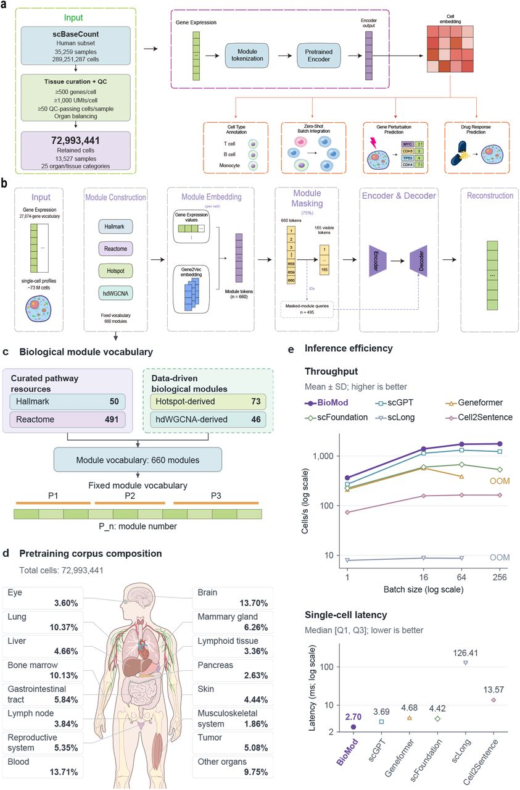
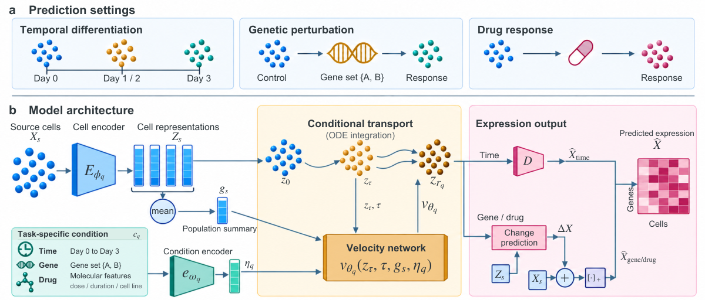

韩博文
马来西亚理科大学 · 2023–2027
计算机科学（智能计算）
深圳河套学院 · 研究助理（RA）· 2026.02–至今
关于我
我的研究兴趣是人工智能在软件工程（AI4SE）与医学（AI4Med）中的应用。
目前聚焦于细胞图像与单细胞转录组之间的跨模态建模，探索从细胞形态信息预测基因表达谱的方法，以理解细胞表型与分子状态之间的联系。
论文与项目
-
以生物学模块作为表示单元构建单细胞基础模型，用于细胞类型注释、扰动响应预测等任务。

图 1 · BioMod：生物学模块、预训练与下游应用。 查看大图 -
TempoBridge：结合最优传输耦合与源群体条件流匹配，建模单细胞群体转变
结合源群体条件、流匹配与最优传输耦合，建模时间变化、基因与化学扰动下的单细胞群体转变。

图 1 · TempoBridge：预测任务与源群体条件传输框架。 查看大图
配图来自上述论文，采用 CC BY 4.0 许可。
联系方式
· · GitHub